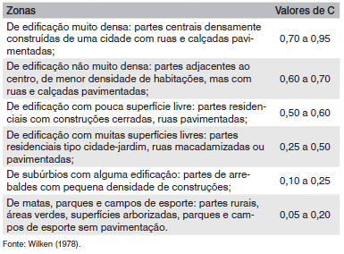

Tempo de Concentração
Método Racional
Método Racional Modificado
Saiba Mais
Entenda o cálculo do coeficiente C
Com base na bacia estudada, insira os valores de áreas:
Área permeável (km
2
):
Área impermeável (km
2
):
Selecione os valores de C de acordo com as características de urbanização da bacia estudada:
Coeficiente de escoamento da área permeável (C
p
):
Coeficiente de escoamento da área impermeável (C
i
):
Calcular Coeficiente C
oie vamos tentar
